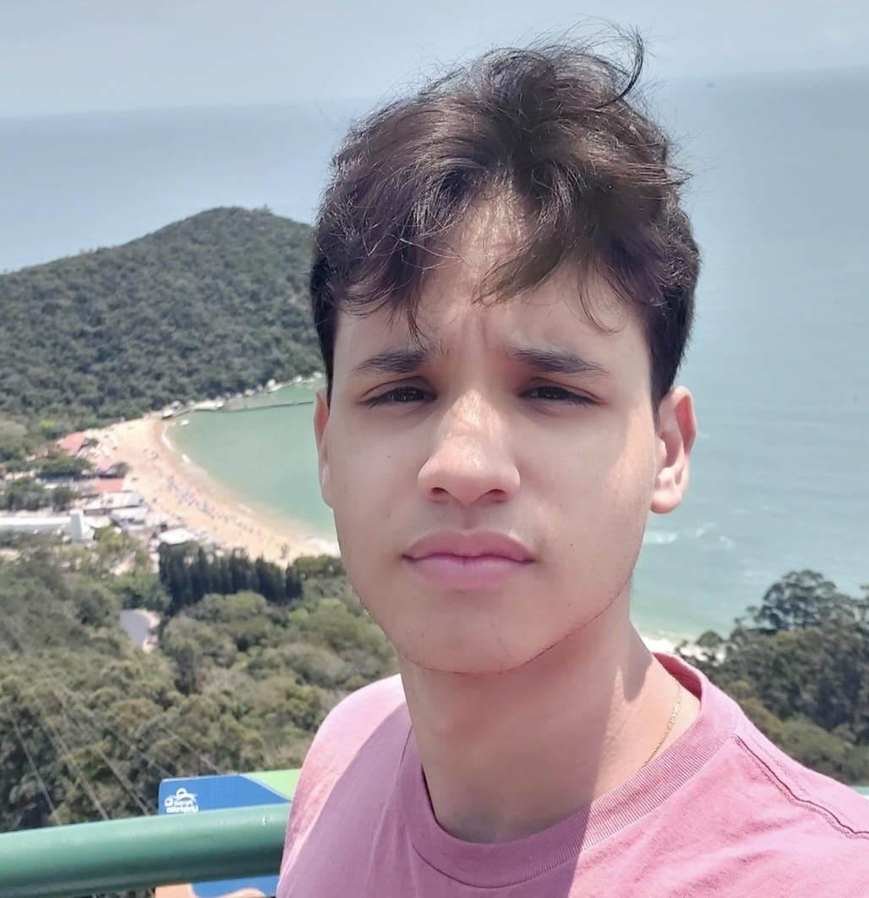

Marcos Antonio Figueiredo Concegliere

Breve Biografia
Nasci no dia 12 de agosto de 2006. Sou amante de tecnologia, design e, principalmente, artes visuais, tendo contato com tudo isso desde cedo. Tenho como principal objetivo seguir na carreira na área da informação e desenvolver minhas habilidades com desenho.
Habilidades pessoais
Como dito anteriormente, eu tenho bastante vínculo com desenho, e também estou praticando digitalmente. Você pode ver alguns desenhos nesse perfil do Instagram.
Sou proativo e costumo buscar soluções criativas para o problema.
No mais, eu estou em aprendizado contínuo no desenvolvimento web, buscando sempre evoluir.
Hobbies
Desenhar, assistir filmes e passear com o meu cachorro.
Vida acadêmica
Tive meu Ensino Básico e Médio completos no Cento Educacional "Santa Rita de Cássia" - CESARC
Participei de mostras escolares nessa mesma escola e concluí alguns cursos de informática através da Fundação Bradesco.
Faculdade
Atualmente, estou cursando Ciência da Computação na Universidade de Vila Velha - UVV.